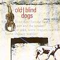

Celtic Lyrics Corner > Artists & Groups > Old Blind Dogs > New Tricks > Bennachie
|  | Bennachie |
| Credits : | Traditional; arranged by Old Blind Dogs |
| Appears On : | New Tricks ; Live |
| Language : | Scots-English |
Lyrics :
Chorus
:
Gin I were whaur the gaudie rins
Whaur the gaudie rins, whaur the gaudie rins
Gin I were whaur the gaudie rins
At the back o' Bennachie
Oh I niver had but twa richt lads
Aye twa richt lads, twa richt bonnie lads
I niver had but twa richt lads
That dearly courted me
(Chorus)
And ane was killed at the laurin' fair
The laurin' fair, at the laurin' fair
Oh ane was killed at the laurin' fair
The ither was droont in the Dee
(Chorus)
And I gave to him the haunin' fine
The haunin' fine, the haunin' fine
Gave to him the haunin' fine
His mornin' dressed tae be
(Chorus)
Well, he gave to me the linen fine
The linen fine, the linen fine
Gave to me the linen fine
Me windin' sheet tae be
(Chorus)
Well, oh gin I were whaur the gaudie rins
Wi' the bonny broom an' the yellow whims
Gin I were whaur the gaudie rins
At the back o' Bennachie
Oh gin I were whaur the gaudie rins
Gin I were whaur the gaudie
At the back o' Bennachie
Aye, oh gin I were whaur the gaudie
Gin I were whaur the gaudie
At the back o' Bennachie